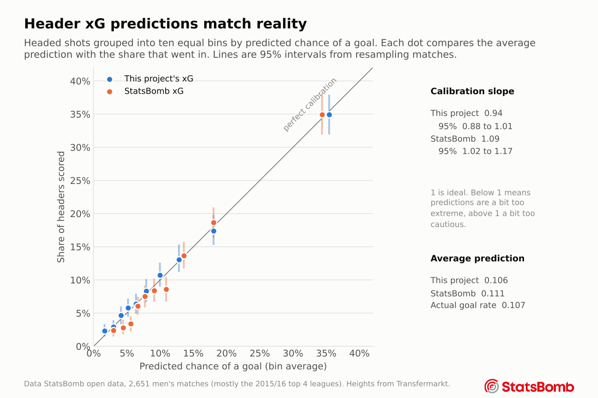

Chapter 6
Method and limits
How the models were built and checked, the mistakes caught along the way, and what free data cannot answer yet.
The models
Each question got two models, a logistic regression and a gradient boosting model from scikit-learn. They were scored with five fold cross validation grouped by match, so a match is never used for training and testing at the same time. The predictions used for player rankings are out of fold, which means a player is never judged by a model that saw his own headers.
Every number below has a 95% interval from a match bootstrap. The matches are resampled with replacement 1,000 times and each score is worked out again. Whole matches are resampled because headers in the same match are related. The predictions stay fixed in this process, so the intervals cover which matches happen to be in the data, not the effect of refitting the model.
| Question | Rows | Better model | AUC (95% interval) | Brier score | Calibration slope |
|---|---|---|---|---|---|
| Is the headed shot a goal? | 10,327 | Logistic | 0.743 (0.728 to 0.758) | 0.086 | 0.94 |
| Is it on target? | 10,327 | Logistic | 0.628 (0.617 to 0.640) | 0.205 | 0.89 |
| Does the defending player win the aerial duel? | 93,684 | Boosting | 0.667 (0.663 to 0.670) | 0.222 | 1.04 |
| Does the opponent shoot within 10 seconds of a defensive header? | 75,968 | Boosting | 0.739 (0.733 to 0.745) | 0.073 | 1.03 |
| Does the defending team win the next ball? | 68,844 | Boosting | 0.694 (0.689 to 0.698) | 0.213 | 1.05 |
AUC is the chance the model rates a random success above a random failure, where 0.5 is a coin flip and 1 is perfect. The Brier score is the average squared gap between prediction and outcome, so lower is better. A calibration slope of 1 means predictions are as spread out as they should be, below 1 means a little too extreme and above 1 a little too cautious. Full tables, including log loss skill with intervals, are in the results on GitHub.
Are the probabilities honest?
A model can rank shots well and still give the wrong numbers, for example by calling every header a 20% chance when the real rate is 10%. Calibration checks this. Headers are grouped into ten bins by their predicted chance, and each bin's average prediction is compared with how often those headers actually went in.

How the xG compares with StatsBomb's
StatsBomb publishes its own professional xG for every shot, so the header model can be compared with it on exactly the same 10,327 headers. The comparison is paired, meaning both models are scored on the same resampled matches each time, which removes the noise that comes from the matches themselves.
| Measure | This project | StatsBomb | Difference (95% interval) | p |
|---|---|---|---|---|
| AUC | 0.743 | 0.749 | −0.006 (−0.014 to +0.003) | 0.20 |
| Brier score | 0.0856 | 0.0850 | +0.0006 (−0.0001 to +0.0014) | 0.12 |
| Average prediction (actual 0.107) | 0.106 | 0.111 |
The two models cannot be told apart on ranking headers. DeLong's test for two AUCs on the same data gives the same answer (p = 0.18), though it assumes every shot is independent, so the match bootstrap is the main result. This model is the better calibrated of the two here, with no overall bias and a slope whose interval includes 1. That comparison favours it a little, since it was fit and tested on these same competitions while StatsBomb's xG is a general model.
Mistakes caught along the way
Each of these would have made the results look better or different than they really are. They are listed because checking for them is most of the work.
- A duel described by its own result. For 13% of aerial duels, the "incoming pass" first picked was actually the winner's own header, because StatsBomb sometimes logs it first. The model would have been fed the outcome. Linked events are now skipped.
- A label that gave away the answer. Defensive headers are logged as a pass when they reach a teammate and as a clearance when they do not. That label was removed from the model that predicts who gets the ball next.
- A sign that made no football sense. The first header xG model said being under pressure made a goal slightly more likely. The pressure flag overlaps with the distance to the nearest defender, which the model already had. In the raw data, pressured headers score about half as often at every distance. The flag was dropped and accuracy did not change.
- Missing heights counted as skill. Players with no height on file, like Luca Toni at 193 cm, rose up the duel rankings because the model did not know they were tall. Duel rankings now include only players with a known height.
- A tracking leak. The first speed test scored an AUC of 0.90 on 38 duels, which was too good to be true. Metrica logs the duel location at the winner's own position, so "moving toward the duel" partly meant "being the winner". Measured toward the tracked ball instead, the AUC fell to 0.53.
Do jumping, strength and speed explain it?
Free data has no physical tests, so two side tests looked at what height cannot explain.
EA FC ratings
Ratings from the FIFA 15 to 22 games were matched to 4,941 players. A match was thrown out when EA's height differed from Transfermarkt's by more than 5 cm. Among 483 players with 100 or more duels, the jumping rating has the strongest link with winning more duels than height predicts (correlation 0.28), followed by heading (0.18) and strength (0.12). Sprint speed shows no link. All the ratings together explain only 12% of the differences between players, so most of what makes someone good in the air is not in the ratings. Added to the duel model, they lift AUC from 0.667 to 0.675.
The ratings were kept out of the main models on purpose. If the expected value already knew a player's heading rating, a ranking would only say who beats EA's opinion, and EA's scouts partly rate heading by watching the same headers.
Tracking data
In two Metrica games, 38 aerial duels had both players tracked for the full second before contact. Speed, top speed, distance covered and movement toward the ball did not pick the winner better than a coin flip (AUC 0.53, with a 95% range of 0.34 to 0.73). Two games are far too few to rule out a real effect.
Limits
- Most of the data comes from the 2015/16 season of four leagues, so the rankings describe those years more than today.
- Strength, jumping reach and speed are not measured, only approximated by game ratings. A player's above expected number contains all of them at once.
- Only 47 players have 25 or more headed shots. That is why the reliability of headed finishing has such a wide interval, and why finishing skill can neither be confirmed nor ruled out.
- The player ranges treat the spread of skill between players as known, so they are slightly too narrow for players near the minimum sample.
- The duel model is useful but modest. Context it does not see, like a team's set piece routines, could still be hiding in player numbers.
- Clearances have no end location in StatsBomb data, so where a clearance landed is approximated by the next event.
Run it yourself
Everything on this site is produced by the code on GitHub. A fresh copy of the repository was run from start to finish and gave identical results. The raw StatsBomb data is downloaded by a script rather than stored, as its licence requires.